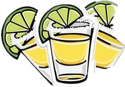

<nav class="navbar navbar-expand-md navbar-light bg-dark">
        <a class="navbar-brand" href="#"></a>
        <button class="navbar-toggler" type="button" data-toggle="collapse" data-target="#navbarSupportedContent" aria-controls="navbarSupportedContent" aria-expanded="false" aria-label="Toggle navigation">
          <span class="navbar-toggler-icon"></span>
        </button>
      
        <div class="collapse navbar-collapse" id="navbarSupportedContent">
          <ul class="navbar-nav mr-auto">
            <li class="nav-item active">
              <a class="nav-link btn btn-outline-warning"
                 (click)="shotsRout()"
              >
                Get Sots 
              </a>
            </li>
            <li class="nav-item">
              <a class="btn btn-warning ml-5" (click)="goBack()" >&laquo;Back</a>
            </li>
          </ul>
          <form class="form-inline my-2 my-lg-0">
            <input class="form-control mr-sm-2" type="search" placeholder="Search" aria-label="Search">
            <button class="btn btn-outline-warning my-2 my-sm-0" type="submit">Search</button>
          </form>
        </div>
      </nav>

      <router-outlet></router-outlet>